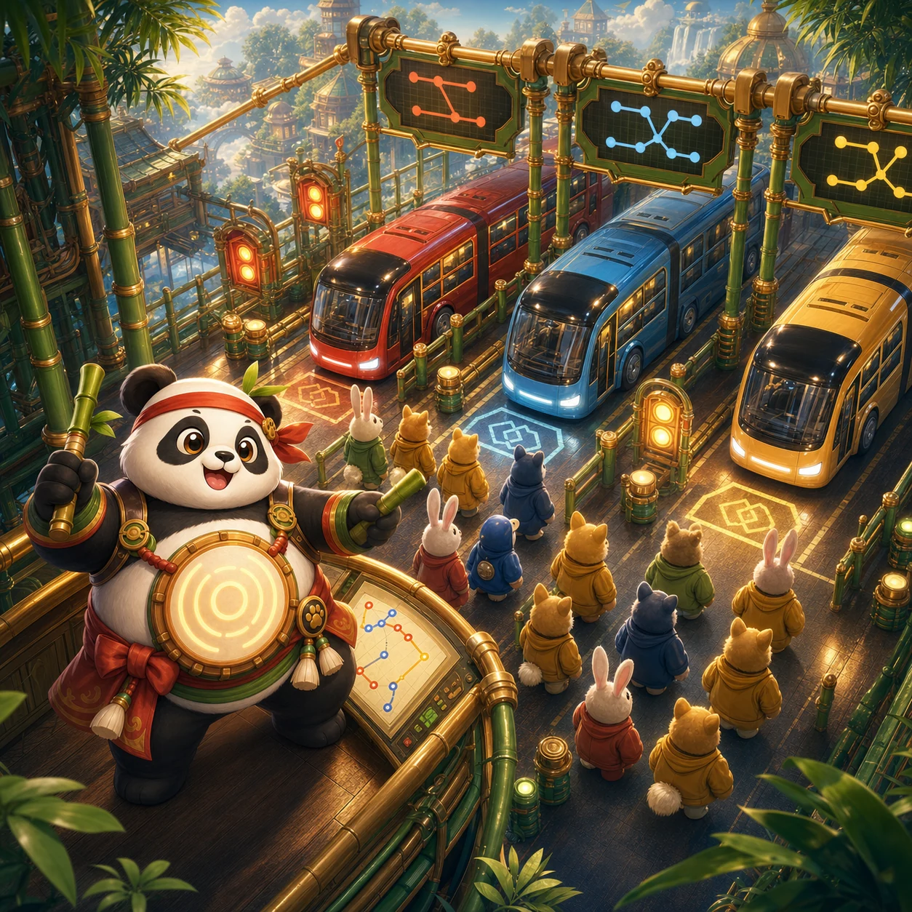

NIGHT TERMINAL CONTROL
Panko's Bus Jam
Read the convoy order, route each queue, and keep the holding lane from locking up.
How to play
Only the first bus accepts passengers. A wrong color waits in the holding lane, in order. If that lane blocks before the active bus is filled, the terminal deadlocks.
- Check the active bus and its remaining seats.
- Dispatch only the front passenger of a queue.
- Use Undo before the holding lane becomes blocked.